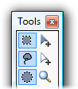
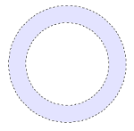

Selection Tools
There are four selection tools available. This page will discuss the first three that are listed below:
-

- Rectangle Select
- Lasso Select
- Ellipse Select
- Magic Wand
These tools are the primary methods for selecting an area of the image for modification, deletion, copying, or cropping. The basic use of these tools is simple, and is similar to the methods used for drawing shapes with the Shape Tools.
Simply draw a selection by using the left mouse button and dragging the mouse around until the shape is how you want it. To remove the selection you may either single-click anywhere while a selection tool is active, or you may use the Edit → Deselect menu item (also available in the Toolbar).
When a selection is active on the image, a dashed outline will be drawn to indicate what area is selected. If one of the selection tools is active, there will also be a blue highlight applied to the selected area. When you switch to another tool, the blue highlight will be removed so that you may get better color accuracy.
Also, all drawing is confined to the area you have selected. This includes effects and adjustments. This can be very useful if you want to confine your drawing to a specific area of the image.
These tools also allow you to alter a selection in one of three different combination modes: subtraction, addition, and inversion. These modes are also known as exclusion, union, and exclusive-or ("xor"). For a quick reference to these commands, see Keyboard & Mouse Commands. Also, selections may be moved, resized, and rotated: see Move Tools for more information.
In order to create a new selection, or to replace the currently active selection, just draw with the left mouse button. The behavior will be similar to the shape tools. You may hold down the Shift key while using the Rectangle Select or Ellipse Select tools to constrain the shape to be a square or a circle, respectively. The following circle selection was made using the Ellipse Selection tool:

To add on to an existing selection, simply hold down the Ctrl key while drawing a selection. This allows you to easily select two areas of the image that are not connected to each other, or extend a selection to adjacent areas. The following selection was made by drawing a circle selection using the Ellipse Select tool, followed by drawing a square using the Rectangle Select tool while holding down the Ctrl key:

To remove portions from an existing selection, use the right mouse button instead of the left mouse button when you draw the selection. This lets you carve out parts of the selection that you are not interested in. This lets you easily do selections like the following, which was accomplished by drawing one circle with the Ellipse Select tool, and then drawing another circle inside of it while holding down the right mouse button:
- 
The third selection combination mode is that of inversion and is possibly by holding down Ctrl while using the right mouse button (instead of the left mouse button) while drawing part of a selection. This will causes active areas of the selection to become inactive, and vice versa. This allows you to create selections like the following, made using the Ellipse Select and Rectangle Select tools:

In the following 3-part example, a picture was taken in Las Vegas, and then the tall building on the left was selected using the Rectangle Select tool:

In the next image, the flag on the right of the image was added to the selection by holding down the Ctrl key while using the Rectangle Select tool:

In the last image of this example, parts of the selection were removed in order to confine the selection to just the building and flag. This was done by using the Lasso Select tool and using the right mouse button to carve out selection areas:

Copyright © 2007
Rick Brewster, Tom Jackson, and past contributors. Portions Copyright
© 2007 Microsoft Corporation. All Rights
Reserved.